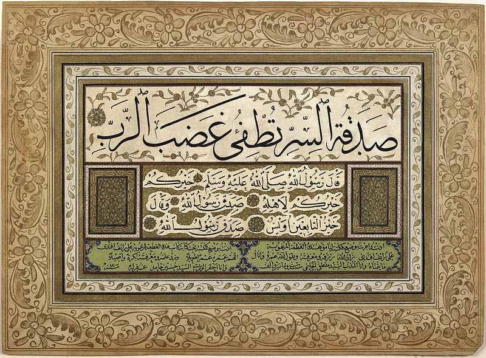

A poetry-based blockchain
At the height of an empire, which name is long lost in the sands of time, the sophistication and refinements of its court were unparalleled. Hundred of poets devoted their lives to weaving the most complex verses together, and patrons spent countless resources sustaining them. Cronists of the time reported a poet could diligently work a year to produce one stanza that was considered correct by the time's strict canon.
The metric and rhyming rules where particularly rigid and intrincate. One stanza did not only had to have certain rhyming verses within itself, but it also had to reference previous stanzas, sometimes as far as its 10th predecessor. That way, a single word change could render all subsequent verses to be considered out of form, and the poet would have to do painstaking modifications, tirelessly trying different combinations of words only to find that no set of words satisfied all the stylistic requirements. Most of the time, when some patron didn't fancy some choice or words or felt that the poem didn't accurately depict his own magnificence and required some part to be changed, every verse after the altered one had to be redone from scratch.
The topic of the poems where typically about the heroic deeds or the benevolence of the parton or his ancestors. Every powerful family in the empire had their own poems, and they were treasured with utmost care. Every addition to them was celebrated with a lavish party. Other influential families were invited to the gathering, where the whole poem, including the new stanza, was triumphantly read. Each house's poems often told contradicting stories about the past and the merits of each family in the imperial expansion wars. That was a huge source of conflicts between the families, and each one fiercely defended their version of the past, as it had a direct consequence on each clan's current political influence.
Those were troublesome times for the empire. Many families were growing more powerful than the emperor himself, and there where rumors of fragmentation and internal wars. It was under such circumstances that the emperor devised a scheme.
He publicly announced that he would only grant his blessing to the longest epic poem. Naturally, being from the most respected and ancient lineage, his family poem was the vastest. He also added a revolutionary rule. He would allow anyone to make a new addition to his family's poem. The new stanza would be read on the monthly courtly gathering.
At first, some families doubled down the effort to produce new verses to make their own poems the longest ones, but they quickly realized that smaller families were extending the royal epic poem and including their own deeds and heroic feats for everyone to know. That way, the royal poem grew faster than any other.
Only the second most prestigious family, with the second-longest poem, persevered on making their own poem the most extensive. They only stopped the effort when they figured out that, in order to succeed, they would have to hire more than half of the poets in the empire. Eventually, they started adding their new poems to the imperial ones.
The emperor's insistence to only preserve and glorify the longest epic poem eventually created a unified version of the empire's history and helped solidify his power.
But wait, is this a blockchain?
Yes! And it has all the basic features of a proof-of-work-based blockchain like Bitcoin and Ethereum.
The system creates a "shared database" (of notable family deeds) where information (poems) cannot be deleted or modified, only added. Instead of conquests or victories, a crypto-currency blockchain would store information about currency transactions.
Each stanza is a block, and each block is chained to the previous blocks (by the strict metric and rhyming rules), forming a "block chain". In a crypto-currency blockchain every block is chained to the previous blocks using a cryptographic trick, but the effects are similar. Changing one bit of data of any block would render all subsequent blocks useless, and a lot of work would have to be made to re-build the rest of the chain.
In this case, the poets would be the miners, working diligently to add a new block to the chain.
Curiously, this system also shares a problem of proof-of-work-based blockchains, such as Bitcoin or Ethereum. By design, it takes a lot of resources to add a new block. In the poetry-based type, every family has to feed and sustain their poets. In Ethereum or Bitcoin everyone who wants to make a transaction has to pay a fee to the miners to include the new transaction in the next block.
Is this how Bitcoin works?
This is just half of the story. Now you need to understand how digital signatures work and how every part of the system fits together to form a currency.